अनुराधा मेरी सबसे पसंदीदा फिल्मों में से एक है। इस फिल्म में भारत रत्न पडित रविशंकर ने संगीत दिया था। फिल्म के मुख्य कलाकार थे बलराज साहनी, लीला नायडू, अभिभट्टाचार्य, असित सेन, नासिर हुसैन, हरि शिवदासानी और बाल कलाकार रानू। कथा और पटकथा है सचिन भौमिक की। संवाद राजेन्द्र सिंह बेदी ने लिखे हैं और गीतकार है शैलेन्द्र। फिल्म में गीत गाये हैं लता मंगेशकर, मन्ना डे और महेन्द्र कपूर ने।
इस फिल्म में हरेक कलाकार ने अपना जबरदस्त योगदान दिया है, लीला नायडू- बलराज साहनी का अभिनय, पं रविशंकर का संगीत निर्देशन, ऋषिकेश मुखर्जी का निर्देशन.. और हाँ लीला नायडू का सादगी भरा सौंदर्य भी। लीला नायडू के बोलने का तरीका भी एक अलग तरह का है जो फिल्म में उनके पात्र को ज्यादा प्रभावशाली बना रहा है। बच्ची रानू का हिन्दी बोलने का लहजा बंगाली है वह अनुराधा की बजाय ओनुराधा रॉय बोलती है। छोटी बच्ची ने भी बहुत शानदार अभिनय किया है।
फिल्म के नायक है डॉ निर्मल चौधरी (बलराज साहनी) अपनी पत्नी अनुराधा (लीला नायडू) और प्यारी, चुलबुली और बड़बोली बिटिया रानू के साथ एक छोटे से गाँव में रहते हैं। डॉ निर्मल के जीवन का एक ही उद्धेश्य है गरीब मरीजों के सेवा करना और इस काम में दिन रात डूबे रहते हैं। उनके पास अपनी पत्नी के लिये बिल्कुल भी समय नहीं है। जब मरीजों को देखने जाते हैं तो अपनी बिटिया रानू (रानू) को भी साथ ले जाते हैं और घर में रह जाती है अकेली अनुराधा।
गाँव में मरीजो को देखकर मुफ्त में दवा देते हुए डॉ निर्मल, मरीज कह रहा है डॉ साहब आप देवता है.. और रानू पूछती है क्यों चाचा फीस नहीं दोगे? निर्मल बच्ची को डपट देते हैं।
शरारती बच्चे डॉ निर्मल की सुई ( इंजेक्शन) से बचने के लिये डॉ की साइकिल के पहिये को सुई लगा देते हैं, और बेचारे डॉ बच्ची को गोद में उठाये पैदल घर पहुंचते हैं यहाँ अनु अकेली दोनों के इंतजार में बैचेन हो रही है। अपना समय काटने के लिये अनु घर में कभी इधर, कभी उधर घूमती रहती है। किताबें पढ़ती रहती है पर कब तक?
अकेली, किताबें पढ़कर अपना समय काटती अनुराधा।
पति आते ही गाँव की मरीजों की , मरीजों के सुख दुख: की बातें करने लगते हैं तो अनु पूछ बैठती है सबकी बीमारी देखते हो कभी मेरी बीमारी के बारे में भी सोचा है? डॉ पूछते हैं तुम्हे क्या बीमारी हुई है? तो अनु कहती है मैं दिन भर अकेली बैठी रहती हूँ, बातचीत करूं तो किससे दीवारों से?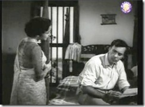
अनु अनुरोध करती है कि आज पूनम का उत्सव है और गाँव वालों ने न्यौता दिया है आज शाम जल्दी घर आ जाना..इसी बहाने मैं भी तुम्हारे साथ दो घड़ी गुजार लूंगी!
अनु अति उत्साहित वही साड़ी पहनती है जिसके खरीदते समय अनु और डॉ निर्मल पहली बार मिले थे, और डॉ की पसंद पर अनु ने वह साड़ी खरीदी थी। पर निर्मल एक तो समय पर नहीं आ पाते और फिर आते ही अपनी प्रयोगशाला में काम में जुट जाते हैं। अनु पूछती है आप आज मुझे पूनम के उत्सव पर ले जाने वाले थे, निर्मल अनु को समझा देते हैं कि आज नहीं और कभी।
यहां अनु प्रयोगशाला की खिड़की से गाँव वालों का संगीत सुन रही है तो निर्मल उसे कहते हैं " अनु तुम यह खिड़की बंद कर दो तुम्हारा यह संगीत मुझे डिस्टर्ब करता है।"
अनु के सर पर जैसे गाज गिरती है, इसी संगीत की वजह से तो अनु और निर्मल मिले थे, इसी संगीत के लिये निर्मल उसे चाहने लगे थे। यहाँ फिल्म फ्लैश बैक में चलती है अनु को वे दिन याद आने लगते हैं जब अनु और डॉ पहली बार मिले थे और....
अनुराधा रॉय एक सुप्रसिद्ध रेडियो कलाकार( गायिका) है और नाचती भी बहुत अच्छा है। संयोग से अनुराधा के भाई आशिम, निर्मल के मित्र भी है। एक संगीत कार्यक्रम में अनुराधा निर्मल की पसंद की हुई साड़ी पहन कर नृत्य पेश करती है। उस कार्यक्रम में निर्मल भी आये हुए हैं। समापन के बाद साड़ी में पाँव उलझ जाने की वजह से अनुराधा गिर जाती है और बेहोश हो जाती है। पाँव में मोच आ जाने और दर्द की की वजह से डॉ का अनु के घर में आना जाना शुरु होता है और उपचार के दौरान धीरे धीरे दोनों के मन में प्रेम के अंकुर फूटने लगते हैं।
अनु का उपचार करते हुए डॉ. निर्मल
और आखिरकार दोनों प्रेम करने लगते हैं और अनु इस फिल्म का सबसे लोकप्रिय गीत गाती है "जाने कैसे सपनों में खो गई अखियां मैं तो हूं जागी मेरी सो गई अखियां"
इस बीच अनु के पिताजी के दोस्त के बेटे दीपक (अभि भट्टाचार्य) विदेश में अपनी पढ़ाई पूरी कर वापस आते हैं। दीपक अनु को चाहते भी हैं। अनु के पिताजी चाहते हैं दोनों का विवाह हो जाये परन्तु अनु दीपक को साफ साफ कह देती है कि वो किसी और को चाहती है, और उसी से विवाह करना चाहती है।
अनु अपने पिताजीको बता देती है कि वह डॉक्टर से शादी करना चाहती है पर पिताजी नहीं मानते और आखिरकार अनु घर छोड़ देती है और आखिरकार निर्मल और अनुराधा शादी के बंधन में बंध जाते हैं।
परन्तु अनु के पिताजी अनु और निर्मल के विवाह को अस्वीकार कर देते हैं।
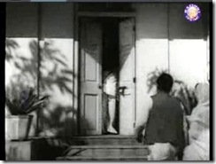
इस फिल्म का संपादन बहुत ही कमाल का है, शादी की पहली रात निर्मल अपनी सेज सजाने के लिये फूल खरीदने बाजार गये हैं और अनु अपने रिकॉर्ड पर गाना सुन रही है जाने कैसे सपनों में खो गई अखिंया.. और पति का इन्तजार कर रही है, जब दरवाजा खुलता है तो कहानी अचानक ही वर्तमान में आती है।
यहां अनु अपनी बच्ची को वही गीत सुना रही है... बच्ची चिल्लाती है माँ पिताजी आ गये पिताजी आ गये.. निर्मल रिकॉर्ड पर अटकी सुई को देख कर कहते हैं "बन्द करो ना इसे गाना तो खत्म हो गया है", तब अनु कहती है "हाँ गाना तो खत्म हो गया.. अनु के ये शब्द और आँखें इतने ही शब्दों में बहुत कुछ कह जाते है"।
संपादन का इतना सुंदर उपयोग कि दर्शक कहानी में इतने जुड़ जाते हैं कि उन्हें यह पता ही नहीं चलता कि इस दृश्य के पहले कहानी फ्लैश बैक में चल रही थी।
निर्मल एक बार फिर किताबों में उलझ जाते हैं और अनु खाना खाने को कहती है और हाथ से किताब ले लेती है तो निर्मल को गुस्सा आ जाता है।
यह क्या मजाक है, मेरी किताब क्यों छीन ली? देखती नहीं मैं काम कर रहा हूँ, अगर इतनी ही भूख है तो तुम खाना खा लो, मैं बाद में खा लूंगा।
यहाँ अनु घर का सौदा लेने गई हुई है और बिटिया रानू घर में अकेली है, तभी अनु के पिताजी शहर से आते हैं यहां रानू उनसे बहुत बातें करती है। यहां नाना- दोहिती के संवाद बहुत मजेदार है।
अपने बेटे और बेटी ( खिलौने) से मिलवाती रानू- "यह है चून्नू मेरा बेटा और मुन्नी मेरा बेटी"
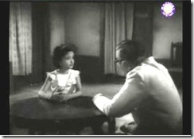
निर्मल से मिलते हुए अनु के पिताजी " मुझे माफ कर दो बेटा"
यहाँ कहानी में नया मोड़ आता है। दीपक एक मित्र सीमा के साथ सैर पर निकला है। यहाँ दीपक की मित्र उससे उसकी उदासी का कारण बहुत पूछती है और अचानक गाड़ी संभल नहीं पाती और दुर्घटना हो जाती है जिसमें सीमा बहुत ज्यादा घायल हो जाती है और दीपक उससे थोड़ा कम।
निर्मल सीमा को जमींदार के घर भेज देते हैं यहां और दीपक को अपने घर पर ले आते हैं। दीपक को छोड़ निर्मल, सीमा का ऑपरेशन करने के लिये जमींदार के यहां चले जाते हैं। यहां अनु, घायल दीपक को देखकर चौंक जाती है।
जब निर्मल घर आते हैं तो यह जान कर आश्चर्य चकित रह जाते हैं कि अनु और दीपक एक दूसरे को जानते हैं।
"क्या तुम एक दूसरे को जानते हो?"
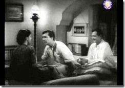
यहां दीपक अनु को बहुत अनुरोध करता है कि वह एक गाना गाये पर अनु नहीं मानती। बाद में निर्मल के कहने पर अनु गाना गाती है "कैसे दिन बीते कैसे बीती रतियाँ पिया जाने ना"
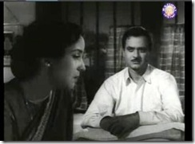
दीपक समझ जाता है कि कुछ ना कुछ गड़बड़ है। वह अनु को बहुत डाँटता है कि क्यों तुमने अपनी प्रतिभा का गला घोंटा?
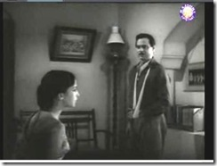
दीपक समझाता है कि लौट चलो अपने पिताजी के पास। अब भी देर नहीं हुई। अनु नाराज होती है।
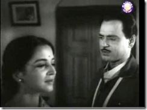
निर्मल एक बार फिर अनु को समझा बुझा देते हैं और उस दिन विवाह की वर्षगांठ होने पर अनु से एक बार फिर जल्दी लौटने का वादा करते हैं और एक बार फिर समय पर लौट नहीं पाते अनु जब पूछती है कि एक दिन भी तुम समय पर घर नहीं आ सकते तो निर्मल कहते हैं-
"तुम समझती हो मैं वहां खेलने जाता हूँ, मैं एक डॉक्टर हूं मेरी कुछ जिम्मेदारियाँ है?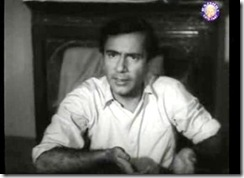
आखिरकार अनु का दिल टूट जाता है और वह दीपक से कहती है "तुम सच कहते थे मैने अपनी जिंदगी बर्बाद करली, मैं तुम्हारे साथ चलने को तैयार हूँ।"
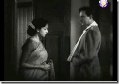
यहाँ निर्देशक ऋषिदा की समझदारी देखिये अनु के मुँह से यह बात सुन कर दीपक कहता है कि "अब मेरा इस घर में रहना उचित नहीं होगा, मैं डाक बंगले में ठहर जाता हूँ, शाम को तुम्हे लेने आ जाऊंगा।
इधर गाँव में जमींदार के यहां सीमा के पिताजी और उनके मित्र कर्नल (डॉक्टर ) त्रिवेदी आये हुए हैं। वे सीमा की पट्टियाँ खुलवा कर जब उसे देखते हैं तो चकित रह जाते हैं। क्यों कि निर्मल ने सीमा की प्लास्टिक सर्जरी कर दी थी और गाल पर निशान गायब कर दिया था। कर्नम त्रिवेदी को आश्चर्य इस बात का होता है कि इतने छोटे गाँव में निर्मल ने यह सब किया कैसे?
वे निर्मल पर बनावटी गुस्सा करते हैं तुम्हारी हिम्मत कैसे हुई? ओपरेशन करने की! बाद में कर्नल त्रिवेदी, निर्मल की बहुत तारीफ करते हैं। उन्हें जब पता चलता है कि निर्मल की एक छोटी सी प्रयोगशाला भी है तो वे निर्मल से कहते हैं वे उसकी प्रयोगशाला देखना चाहेंगे और हाँ उसके घर शाम का खाना भी खायेंगे।
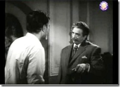
निर्मल अति उत्साहित घर आकर अपनी बात बताने लगते हैं, अनु कुछ कहने लगती है तो उसे रोक देते हैं तो अनु पूछ बैठती है " हमेशा अपनी ही सुनाओगे, कभी मेरी नहीं सुनोगे? और अनु, निमर्ल को अपना फैसला सुना देती है कि वो शाम को दीपक के साथ हमेशा के लिये अपने पिता के घर जा रही है।
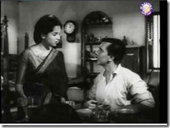
निर्मल बहुत आहत होता है पर अनु से अनुरोध करता है कि जहां दस साल निकाले वहां एक दिन के लिये और रुक जाये क्यों कि कर्नल त्रिवेदी खाने पर आने वाले हैं। अनु एक बार फिर मान जाती है।
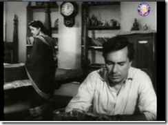
शाम को कर्नल त्रिवेदी सीमा के पिताजी के साथ घर आते हैं और जब उन्हें पता चलता है कि अनु गायिका है तो वे अनु से बहुत कहते हैं कि अनु गाना गाये तब अनु गाना गाती है " हाय रे वो दिन क्यूं ना आये..
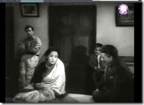
कर्नल त्रिवेदी प्रयोगशाला देखते समय अनु से कुछ बाते पूछते हैं जिससे उन्हें पता चल जाता है कि अनु, निर्मल के प्रयोगशाला में ही सो जाने के बाद उसकी सेवा करती है, कर्नल त्रिवेदी को अपनी कहानी याद आजाती है उन्होने भी तो यही सब किया था अपनी पत्नी के साथ, आज उन्हें पछतावा होता है पर जब उनकी पत्नी इस दुनियां में नहीं है।
गाने और खाने के बाद सीमा के पिताजी निर्मल के आगे नतमस्तक हो जाते हैं और बीस हजार रूपये का चेक देते हुए कहते हैं "यह आपके त्याग और मेहनत के लिये एक छोटा सा नजराना.. तब कर्नल त्रिवेदी निर्मल के हाथ से चेक ले लेते हैं और सीमा के पिताजी से कहते हैं अगर तुम वाकई त्याग और तास्या को यह चेक देना चाहते हो तो यह चेक अनु को दों, क्यों कि त्याग तो अनु ने किया है। अनु अपनी इस तारीफ से दंग रह जाती है और सीमा के पिताजी वह चैक अनु को दे देते हैं।
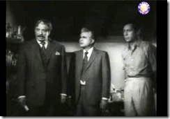
अगली सुबह अनु के जाने का समय हो गया है पर अनु घर के कामों में व्यस्त है, बाहर दीपक बार बार हॉर्न बजा रहा है। निर्मल जब अनु को पूछते है अनु तुम्हारी गाड़ी....?
अनु कहती है क्या तुम् मुझ पर इतना भी अधिकार नहीं रखते? मुझे इतना भी नहीं कह सकते चली जाओ, फिर यहां कभी ना आओ।
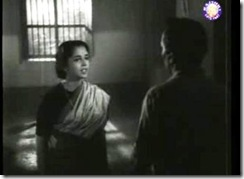
इतना सुन कर निर्मल की आँखों से आँसु बह निकले और दोनो ...
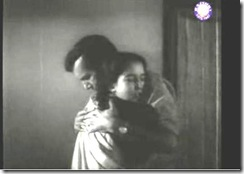
यह समीक्षा आपको कैसी लगी? अगर आपको मेरा यह प्रयास अच्छा लगा हो तो भविषय में और भी फिल्में दिखाई जायेंगी।